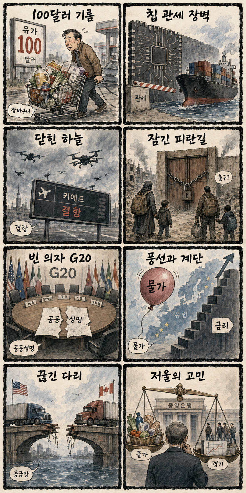
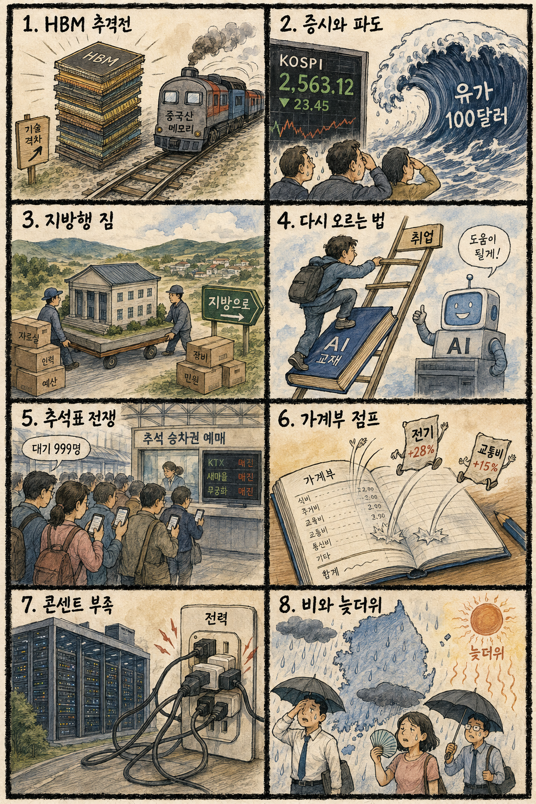

01
팔란티어 · 172.35→182.53달러 · +5.91%
내용요약 시가 대비 5.91% 상승하며 AI 소프트웨어 대형주 중 가장 강한 흐름을 보였습니다.
예상여파 국내 AI 소프트웨어 심리에 긍정적이지만 고평가 종목의 추격 위험은 남습니다.
MORNING_BRIEFING_20260904
작성 시각: 2026-09-04 06:38 KST · 직전 미국 정규장과 2026-09-04 KST 당일 공개 기사 기준
직전 미국 정규장인 9월 3일에는 연준 인사의 9월 금리 동결 지지 발언과 국채금리 하락으로 다우 +1.18%, S&P 500 +1.06%, 나스닥 +1.40%가 동반 상승했습니다. 팔란티어 +5.91%, 오라클 +4.60%, 슈퍼마이크로 +3.75% 등 성장주가 강했습니다. 오늘 한국 증시는 미국 기술주 반등이 완충재지만 고유가·반도체 관세 압박과 전일 코스닥 약세를 함께 경계해야 합니다.
| 지수 | 종가 | 등락률 | 한국 증시 시사점 |
|---|---|---|---|
| 다우존스 | 53,686.11 | +1.18% | 경기민감주 심리 회복 |
| S&P 500 | 7,747.71 | +1.06% | 성장주 투자심리 개선 |
| 나스닥 종합 | 26,584.06 | +1.40% | 성장주 투자심리 개선 |
국채금리 하락과 연준 동결 기대가 성장주 반등을 이끌었습니다.
중동 긴장이 완화되지 않아 유가와 물가 부담은 남아 있습니다.
종가 기준 반등했지만 시가 대비로는 -1.07%, KOSDAQ은 -2.96%였습니다.
수급·컨센서스·보정 표본을 모두 검증한 후보가 없습니다.
9월 3일 보고서는 검증 문턱을 통과한 후보가 없어 공식 추천을 내지 않았습니다. 게시 당시 판단은 그대로 유지되며 사후 종목을 추가하지 않습니다.
| 시장 | 종가 | 등락률 | 해석 |
|---|---|---|---|
| KOSPI | 6,579.48 | +0.26% | 시가 대비 -1.07% |
| KOSDAQ | 790.21 | -1.71% | 시가 대비 -2.96% |
| 다우존스 | 53,686.11 | +1.18% | 미국 투자심리 개선 |
| S&P 500 | 7,747.71 | +1.06% | 미국 투자심리 개선 |
| 나스닥 종합 | 26,584.06 | +1.40% | 미국 투자심리 개선 |
팔란티어 +5.91%, 오라클 +4.60%로 시가 대비 상승했습니다.
슈퍼마이크로 +3.75%, 크라우드스트라이크 +2.93%였습니다.
테슬라 +2.86%, 인텔 +2.60%, 마벨 +2.31%였습니다.
넷플릭스 -0.61%, 홈디포 -0.04%로 반등장에서 뒤처졌습니다.
내용요약 시가 대비 5.91% 상승하며 AI 소프트웨어 대형주 중 가장 강한 흐름을 보였습니다.
예상여파 국내 AI 소프트웨어 심리에 긍정적이지만 고평가 종목의 추격 위험은 남습니다.
내용요약 시가 대비 4.60% 올라 기업용 클라우드·AI 인프라 기대가 회복됐습니다.
예상여파 데이터센터 투자 심리를 지지해 국내 서버·전력 연결종목의 관심을 높일 수 있습니다.
내용요약 시가 대비 3.75% 상승해 AI 서버 종목의 위험선호 회복을 반영했습니다.
예상여파 국내 기판·냉각·전력 장비주에도 심리적 완충재가 될 수 있으나 공급망 뉴스 확인이 필요합니다.
내용요약 시가 대비 2.93% 반등하며 전날 약세를 일부 되돌렸습니다.
예상여파 AI 보안 투자 수요 기대가 국내 보안 소프트웨어 심리에 긍정적으로 작용할 수 있습니다.
내용요약 지수 상승에도 시가 대비 0.61% 하락해 대형 성장주 중 상대 약세였습니다.
예상여파 미디어·구독 성장주의 종목별 실적 차별화가 이어질 수 있음을 보여줍니다.
나스닥 +1.40%와 AI 소프트웨어·서버주의 반등은 국내 반도체·성장주에 우호적 출발 신호입니다. 다만 WTI 상승, 미국의 반도체 투자 압박, 전일 KOSPI 시가 대비 -1.07%와 KOSDAQ -2.96%의 취약한 장중 흐름은 경계 요인입니다. 원화·외국인 선물과 삼성전자·SK하이닉스가 시초가를 지키는지 확인하기 전에는 갭 상승 추격을 피합니다.
오늘은 추천 없음 — 현금 관망
미국 성장주 반등에도 전일까지의 외국인·기관 수급, 컨센서스 변화, 30건 이상 유사 조건 확률 보정, 예상 손익비 1.5 이상을 동시에 검증한 국내 종목이 없습니다. 점수와 확률을 임의로 만들지 않습니다.
관심 연결종목 AI 서버·반도체·전력 인프라는 뉴스 연결 관찰 대상일 뿐 매수 추천이 아닙니다. 장전 급등 및 과도한 갭 상승 종목은 추격매수 금지입니다.
미국 금리 하락 효과가 국내 수급으로 이어지는지 확인합니다.
대미 투자 협상 뉴스가 삼성전자·SK하이닉스의 장중 흐름에 미치는 영향을 봅니다.
WTI 나흘 상승이 항공·화학과 정유주의 반대 방향 수급을 만드는지 관찰합니다.
일본은행 긴축 기대에 따른 엔 캐리 축소와 아시아 증시 변동성을 점검합니다.
핵심 요약: AI 경쟁의 축이 칩에서 개발 플랫폼·전력·시스템 최적화·보안 규제로 동시에 넓어지고 있습니다. 허깅페이스 인수 보도와 다중 모델 장애는 플랫폼 집중 및 운영 복원력의 중요성을 함께 보여줍니다.
내용요약 엔비디아가 개방형 AI 모델·데이터 플랫폼 허깅페이스를 17조5천억원 규모에 인수한다는 이데일리 당일 보도입니다.
예상여파 칩 공급자를 넘어 개발도구와 모델 유통망까지 장악하려는 움직임으로, 개방형 AI 생태계의 독립성과 기업 고객의 플랫폼 선택에 큰 영향을 줄 수 있습니다.
내용요약 챗GPT·클로드·그록이 동시다발 장애를 겪고 제미나이도 흔들렸다는 당일 보도입니다.
예상여파 기업이 생성형 AI를 핵심 업무에 연결할수록 다중 모델 전환, 로컬 백업, 장애 대응 체계를 갖추는 것이 사업 연속성의 필수 조건이 됩니다.
내용요약 AI 확산이 세계 경제를 크게 키울 수 있지만 내년부터 15GW 규모의 전력 부족이 병목이 될 수 있다는 발언을 다룬 보도입니다.
예상여파 데이터센터 투자 경쟁이 송전망·발전·냉각 설비로 번지며 전력비와 인허가가 AI 서비스 원가 및 배치 지역을 좌우할 가능성이 큽니다.
내용요약 메모리 적층만으로는 AI 시스템 병목을 풀기 어렵고 연산·네트워크·소프트웨어를 함께 최적화해야 한다는 마이크로소프트 임원 발언 보도입니다.
예상여파 HBM 용량 경쟁에서 시스템 효율 경쟁으로 초점이 이동하면 패키징·인터커넥트·전력 관리 기술의 가치가 더 커질 수 있습니다.
내용요약 금융당국이 AI를 활용한 보안 통제를 전제로 망분리 규제를 추가 완화한다는 당일 보도입니다.
예상여파 금융권 생성형 AI 도입은 빨라질 수 있지만 민감정보 차단, 모델 감사, 공급망 보안 역량이 실제 확산 속도를 결정할 전망입니다.
핵심 요약: 모스크바 드론 공세와 가자 주민 이주 구상이 지정학적 긴장을 높이는 가운데, 고유가와 미국·캐나다 관세 갈등이 물가와 공급망을 압박합니다. 엔화 급등은 아시아 금융시장 변동성을 키울 변수입니다.
내용요약 우크라이나가 모스크바를 향해 수백 기 규모의 드론 공세를 벌였다는 연합뉴스 당일 보도입니다.
예상여파 러시아 수도권 항공·물류 차질과 보복 위험이 커지면 에너지·곡물·보험료 변동성이 다시 확대될 수 있습니다.
내용요약 미국 대통령이 관세 갈등 중인 캐나다 총리에게 경제적 타격을 공개 경고했다는 한국일보 보도입니다.
예상여파 북미 공급망의 정책 불확실성이 자동차·목재·식품 가격과 기업의 생산기지 재배치 판단에 부담을 줄 수 있습니다.
내용요약 이스라엘 극우 장관이 가자 주민 약 200만명의 해외 이주 구상을 공개했다는 뉴시스 보도입니다.
예상여파 강제 이주 논란과 국제법 갈등이 커지며 휴전 협상과 인도주의 지원, 주변국 외교 관계가 더 어려워질 수 있습니다.
내용요약 엔화가 달러 대비 2% 급등해 155엔대로 올라섰고 일본은행 금리 인상 기대가 배경으로 지목됐습니다.
예상여파 엔 캐리 거래 축소 가능성이 아시아 주식·채권의 변동성을 키우고 일본 수출기업과 한국 경쟁사의 가격 구도에도 영향을 줄 수 있습니다.
내용요약 중동 긴장이 이어지며 WTI가 나흘째 상승했고 브렌트유는 장중 97달러를 기록했다는 보도입니다.
예상여파 높은 에너지 가격이 운송비와 기대인플레이션을 밀어 올려 주요국 금리 인하 기대와 소비 여력을 동시에 압박할 수 있습니다.

핵심 요약: 미국의 반도체 투자 압박과 수출 편중 위험이 커지는 가운데 청년 고용 회복과 RE100 조달 격차 해소가 구조적 과제로 떠올랐습니다. 오늘은 동해안·제주 비와 내륙 늦더위도 생활 변수입니다.
내용요약 미국 부통령이 삼성전자·SK하이닉스를 포함한 외국기업에 미국 투자 여부에 따른 보상과 불이익 원칙을 강조했다는 당일 보도입니다.
예상여파 대미 생산 확대 압박과 반도체 관세 불확실성이 커져 국내 설비투자, 보조금 협상, 공급망 배분 전략이 더 복잡해질 수 있습니다.
내용요약 정부와 10대 그룹이 청년 채용 회복을 위해 공동 대응에 나섰다는 당일 보도입니다.
예상여파 인턴·직무훈련이 실제 정규 채용으로 이어지는지와 AI 전환으로 바뀐 직무 수요를 교육과 얼마나 연결하는지가 성과를 좌우합니다.
내용요약 반도체 수출 호황의 과실이 다른 산업의 경쟁력 약화로 이어지지 않도록 정책 균형이 필요하다는 당일 보도입니다.
예상여파 수출·세수의 반도체 의존도가 높아질수록 메모리 가격 조정 때 경기 충격이 커질 수 있어 서비스·소부장·신산업 투자가 중요합니다.
내용요약 국내 RE100 기업의 재생에너지 사용률이 국내 사업장 13%, 해외 사업장 67%로 큰 격차를 보였다는 보도입니다.
예상여파 전력 조달 제도와 계통 투자가 늦으면 수출기업의 탄소 규제 대응 비용이 커지고 국내 증설 매력도도 낮아질 수 있습니다.
내용요약 전국은 대체로 맑지만 동해안과 제주에 비가 오고 서울 낮 기온은 29도로 예상된다는 뉴스핌 당일 예보입니다.
예상여파 강원·제주 이동과 야외 작업은 비·강풍에 대비하고, 내륙은 큰 일교차와 늦더위에 맞춰 건강 관리를 점검해야 합니다.
